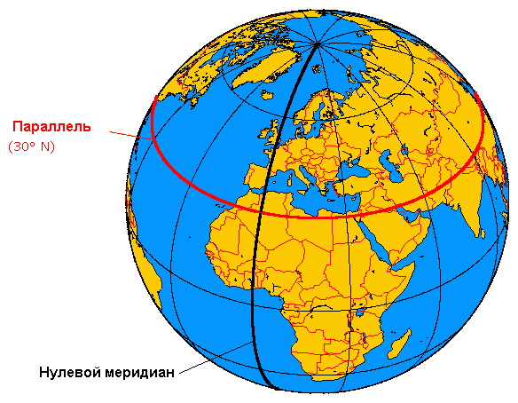

Параллели
Материал из Википедии — свободной энциклопедии
Паралле́ль — линия сечения поверхности планеты плоскостью, параллельной плоскости экватора.

На глобусе
На глобусе параллель рисуется в виде окружности, все точки которой равноудалены от экватора. Все точки одной параллели имеют одинаковую широту, но различную долготу. Длины параллелей различны: они увеличиваются при приближении к экватору и уменьшаются — к полюсам. Экватор — самая длинная параллель.
На Земле
Длина дуги параллели в 1° по долготе.
Чтобы найти для любой параллели длину дуги в 1°, нужно умножить 111,3 км (длину дуги экватора в 1°) на косинус угла, соответствующего географической широте искомой параллели. Например, на широтах с шагом 15° получаем:
- 15° — 108 км
- 30° — 96 км
- 45° — 79 км
- 60° — 56 км
- 75° — 29 км
- 90° — 0 км